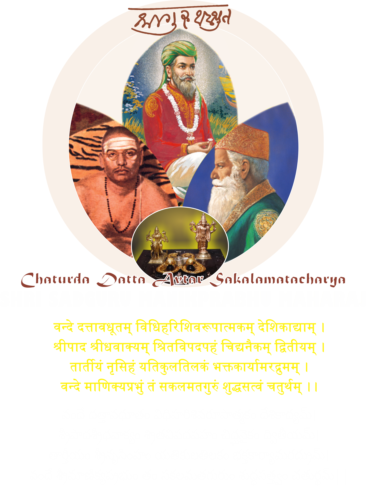
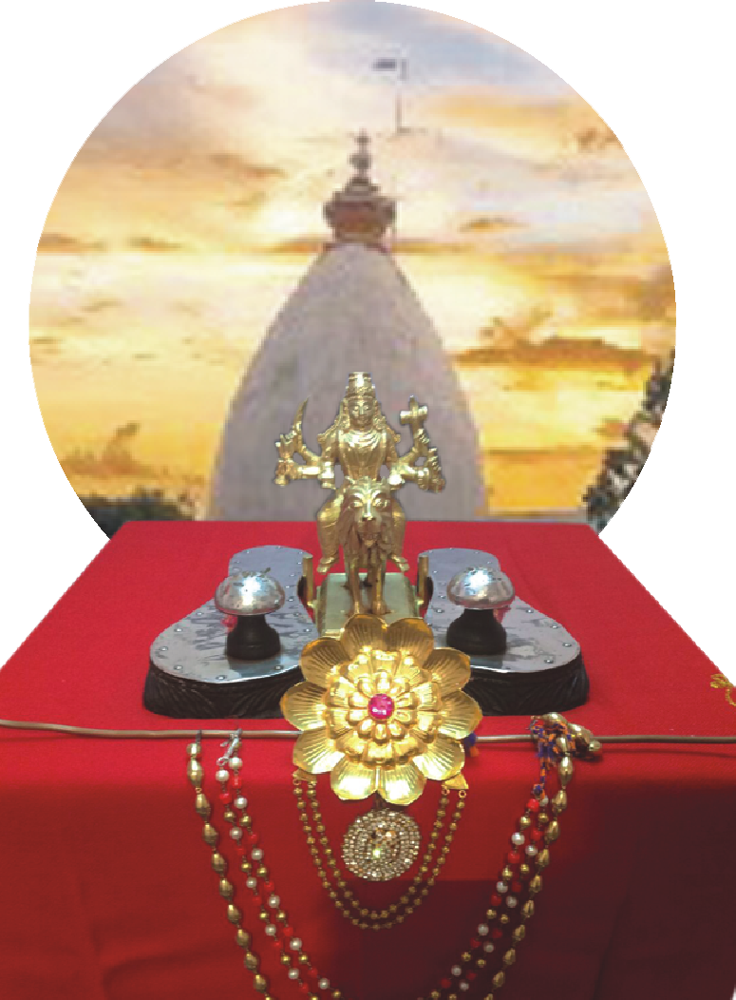

|| శ్రీ భక్తకార్యకల్పదృమ గురుసార్వభౌమ శ్రీమద్రాజాధిరాజ యోగీమహారాజ త్రిభువనానంద అద్వైత అభేద నిరంజన నిర్గుణ నిరాలంబ పరిపూర్ణ సదోదిత సకలమతస్థాపిత శ్రీ సద్గురు మాణికప్రభు మహారాజ కీ జయ ||

👆 CLICK ON IMAGE


Shri Sadguru Manik Prabhu Maharaj
Shri Sadguru Manik Prabhu Maharaj (1817–1865) from India was a Hindu saint, poet, philosopher, and a Guru. He is regarded as the fourth full incarnation of the
Universal Lord Dattatreya. He is an Avadhuta, ever anchored in Atman (Spirit), but always overflowing with compassion for all the beings and the entire creation. His
philosophy is known as ‘Sakala Mata Siddhanta’ or ‘Sakala Mata Sampradhaya’.
Shri Manik Prabhu strongly advocated the essential oneness of all religions. His Muslim
Devotees revered him as an incarnation of Mehboob Subhani, whereas his Lingayat devotees saw him as a form of Basavanna. Manik Prabhu composed numerous Bhajans
and Padas (romantic-devotional poetry) in various languages such as Marathi, Kannada, Hindi, Urdu, and Sanskrit.
Shri Prabhu Mandir
Managed by Shri Manik Prabhu Samsthan – This is the place where Manik Prabhu attained Sanjivani Mahasamadhi in 1865. It is located at Manik Nagar, Bidar District,
Karnataka (His birthplace).
శ్రీ సద్గురు మాణిక్ ప్రభు మహారాజ్
భారతదేశానికి చెందిన శ్రీ సద్గురు మాణిక్ ప్రభు మహారాజ్ (1817-1865) ఒక హిందూ సాధువు, కవి, తత్వవేత్త మరియు గురువు. ఆయనను విశ్వనాథుడైన దత్తాత్రేయుని నాల్గవ పూర్తి అవతారంగా పరిగణిస్తారు . ఆయన
ఒక అవధూత, ఎల్లప్పుడూ ఆత్మలో (చైతన్యంలో) పాతుకుపోయి ఉంటారు, కానీ సకల ప్రాణుల పట్ల మరియు మొత్తం సృష్టి పట్ల ఎల్లప్పుడూ అపారమైన కరుణతో నిండి ఉంటారు. ఆయన తత్వాన్ని ' సకలమత సిద్ధాంతం'
లేదా ' సకలమత సంప్రదాయం' అని పిలుస్తారు మరియు ఇది శ్రీ ఆదిశంకరుల అద్వైత వేదాంత సూత్రాలను ప్రతిధ్వనిస్తుంది . ఇది సంఘర్షణలను సృష్టించే అన్ని అడ్డంకులను అధిగమించి, ప్రజలందరి మధ్య
సామరస్యాన్ని వాగ్దానం చేస్తుంది. శ్రీ ప్రభు బోధనలు భక్తి మార్గానికి ప్రాధాన్యతనిస్తాయి. దానితో పాటు, ఆయన ప్రాణుల ఆధ్యాత్మిక ఐక్యతకు సంబంధించిన వేదాంత సత్యాలపై అత్యద్భుతంగా నైతిక ప్రబోధాలు
చేస్తారు.
శ్రీ మాణిక్ ప్రభు అన్ని మతాల యొక్క సారాంశ ఏకత్వాన్ని బలంగా సమర్థించారు . ఆయన ముస్లిం భక్తులు ఆయనను మెహబూబ్ సుభానీ అవతారంగా పూజించగా, ఆయన లింగాయత్ భక్తులు ఆయనను బసవన్న
స్వరూపంగా భావించారు. మాణిక్ ప్రభు మరాఠీ, కన్నడ, హిందీ, ఉర్దూ మరియు సంస్కృతం వంటి వివిధ భాషలలో అనేక భజనలు మరియు పదాలు (ప్రేమ-భక్తి కవిత్వం) రచించారు.
శ్రీ మాణిక్ ప్రభు సంస్థాన్ నిర్వహించే శ్రీ ప్రభు మందిర్
- ఇది 1865లో మాణిక్ ప్రభు సంజీవని మహాసమాధిని పొందిన ప్రదేశం. ఇది కర్ణాటకలోని బీదర్ జిల్లా, మానిక్ నగర్ వద్ద ఉంది.